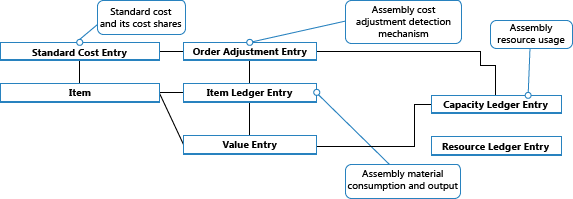

Designdetails: Montageauftragsbuchung
Die Montageauftragsbuchung basiert auf demselben Prinzip wie das Buchen ähnlicher Aktivitäten von Verkaufsaufträgen und von Produktionsverbrauch/-aushabe. Die Prinzipien werden jedoch insofern kombiniert, als Montageaufträge ihre eigene Buchungsbenutzeroberfläche, wie für Verkaufsaufträge, haben, während die tatsächliche Postenbuchung im Hintergrund als direkte Artikel- und Ressourcen Buch.-Blattbuchung, wie für den Fertigungsverbrauch, Ausgabe und Kapazität geschieht.
Ähnlich wie bei der Fertigungsauftragsbuchung werden die verbrauchten Komponenten und die verwendeten Ressourcen konvertiert und als Montageartikel ausgegeben, wenn der Montageauftrag gebucht wird. Weitere Informationen finden Sie unter Designdetails: Produktionsauftragsbuchung. Der Kostenfluss für Montageaufträge ist jedoch weniger Komplex, insbesondere da die Buchung der Montagekosten nur einmal geschieht und daher keinen WIP-Bestand generiert.
Die folgenden Buch.-Blattbuchungen treten während der Montageauftragsbuchung auf:
- Das Artikel Buch.-Blatt bucht die positiven Artikelposten, die Ausgabe des Montageartikels repräsentieren, aus dem Montageauftragskopf.
- Das Artikel Buch.-Blatt bucht die negativen Artikelposten, die den Verbrauch von Montagekomponenten repräsentieren, aus Montageauftragszeilen.
- Das Ressourcen-Buch.-Blatt bucht den Verbrauch von Montageressourcen (Zeiteinheiten) aus den Montageauftragszeilen.
- Das Kapazitäts Buch.-Blatt bucht Wertposten bezüglich des Ressourcenverbrauchs, aus den Montageauftragszeilen.
Das folgende Diagramm zeigt die Struktur von Artikel- und Ressourcenposten, die aus der Montageauftragsbuchung resultieren.

Hinweis
Arbeitsplätze und Arbeitsplatzgruppen sind enthalten, um zu veranschaulichen, dass Kapazitätsposten aus der Produktion sowie aus der Montage erstellt werden.
Die folgenden Diagramm zeigt, wie Montagedaten bei der Buchung in Buchungsposten eingehen.

Buchen der Sequenz
Die Buchung eines Montageauftrags erfolgt in der folgenden Reihenfolge:
- Die Montageauftragszeilen werden gebucht.
- Der Montageauftragskopf wird gebucht.
In der folgenden Tabelle wird die Aktionsfolge illustriert.
| Aktion | Description |
|---|---|
| Buchung initialisieren | 1. Führen Sie Vorprüfungen durch. 2. Fügen Sie die Buchungsnummer hinzu, und ändern Sie den Montageauftragskopf. 3. Geben Sie den Montageauftrag frei. |
| Buchung |
|
Wichtig
Anders als für fertiggestellte Artikel, die zu den Soll-Kosten gebucht werden, wird Montageausstoß zu den Ist-Kosten gebucht.
Regulierung Kosten
Sobald ein Montageauftrag gebucht wird, in der Bedeutung, dass Komponenten (Material) und Ressourcen in einen neuen Artikel montiert werden, soll die Bestimmung der Ist-Kosten dieses Montageartikels und die Kosten des aktuellen Lagerstatus der betroffenen Komponenten möglich sein. Dies wird durch Weiterleitung von Kosten von den gebuchten Posten der Quelle (den Komponenten und Ressourcen) an die gebuchten Posten des Ziels (die Montageartikel) erreicht. Die Weiterleitung der Kosten wird ausgeführt, indem neue Posten berechnet und generiert werden; diese werden als Regulierungsposten bezeichnet und den Zielposten zugeordnet.
Die weiterzuleitenden Montagekosten werden mithilfe des Auftragsebenenerkennungsmechanismus erkannt. Informationen über andere Ausgleichserkennungsmechanismen, siehe Designdetails: Kostenanpassung
Erkennen der Regulierung
Die Entdeckungsfunktion auf Auftragsebene wird in Konvertierungsszenarien, der Produktion und bei der Montage verwendet. Die Feldfunktionen funktionieren wie folgt:
- Kostenregulierung wird erkannt, indem der Auftrag markiert wird, sobald eine Ressource oder ein Werkstoff als verbraucht/verwendet gebucht wird.
- Die Kostenweiterleitung entsteht durch Anwenden der Kosten aus dem Werkstoff oder der Ressource auf die Ausstoßposten, die mit dem Auftrag verknüpft sind.
Die folgende Grafik zeigt die Regulierungspostenstruktur und die Regulierung der Montagekosten.

Preiskorrektur durchführen
Die Verteilung erkannter Regulierungen von Material- und Ressourcenkosten zu den Montageausgabeposten geschieht durch die Stapelverarbeitung Lagerreg. fakt. Einst. Preise. Enthält die Funktion „Mehrstufiger Ausgleich“, die aus den folgenden zwei Elementen besteht:
- Nehmen Sie einen Montageauftrags-Ausgleich vor, welcher die Kosten aus dem Material- und Ressourcenverbrauch an den Montageausgangsposten weiterleitet. Zeilen 5 und 6 im nachstehenden Algorithmus sind dafür zuständig.
- Nehmen Sie Ein-Niveau-Anpassungen vor, welche die Kosten für einzelne Artikel mithilfe ihrer Lagerabgangsmethode weiterleiten. Rubriken 9 und 10 im nachstehenden Algorithmus sind für dafür zuständig.

Hinweis
Das Element „WIP-Regulierungen“ auf den Zeilen 7 und 8 ist für die Weiterleitung von Produktionsmaterial und Kapazitätsnutzung an die Ausgabe nicht abgeschlossener Fertigungsaufträge verantwortlich. Dies wird nicht verwendet, wenn Montageauftragskosten reguliert werden, da der Begriff WIP nicht auf Montage angewendet wird.
Weitere Informationen darüber, wie Kosten aus der Montage und aus der Produktion in der Finanzbuchhaltung gebucht werden, finden Sie unter Designdetails: Bestandesbuchung.
Montagekosten sind immer Ist-Kosten
Das Umlaufbestand- (WIP) Konzept gilt nicht in der Montageauftragsbuchung. Montagekosten werden nur als Ist-Kosten gebucht, nie als erwartete Kosten. Weitere Informationen finden Sie unter Designdetails: Erwartete Kostenbuchung.
Dies wird durch die folgende Datenstruktur ausgeführt.
- Im Feld Art der Artikel Buch.-Blattzeilen in den Tabellen Kapazitätsposten und Wertposten Tabellen, wird Ressource verwendet, um Montageressourcenposten zu identifizieren.
- Im Feld Artikelpostenart der Artikel Buch.-Blattzeilen, in den Tabellen Kapazitätsposten und Wertposten Tabellen, werden Montageausgabe und Montageverbrauch verwendet, um die Ausgabemontageartikelposten und verbrauchte Montagekomponentenposten zu identifizieren.
Darüber hinaus werden Produktbuchungsgruppen im Montageauftragskopf und in den Montageauftragszeilen standardmäßig wie folgt ausgefüllt.
| Einheit | Typ | Buchungsgruppe | Gen. Produktbuchungsgruppe |
|---|---|---|---|
| Montageauftragskopf | Artikel | Lagerbuchungsgruppe | Gen. Produktbuchungsgruppe |
| Montageauftragszeile | Artikel | Lagerbuchungsgruppe | Gen. Produktbuchungsgruppe |
| Montageauftragszeile | Ressource | Gen. Produktbuchungsgruppe |
Entsprechend werden nur Ist-Kosten in der Finanzbuchhaltung gebucht, und keine Interimskonten werden aus der Montageauftragsbuchung eingegeben. Weitere Informationen finden Sie unter Designdetails: Konten in der Finanzbuchhaltung.
Auftragsmontage
Der Artikelposten, der aus der Buchung eines Auftragsmontageverkaufs resultiert, wurde für den entsprechenden Artikelposten für die Montageausgabe fest angewendet. Entsprechend werden die Kosten eines Auftragsmontageverkaufs aus dem Montageauftrag abgeleitet, mit dem er verknüpft wurde.
Artikelposten des Typs Verkauf, die aus dem Buchen von Auftragsmontagemengen resultieren, werden mit Ja im Feld Auftragsmontage markiert.
Das Buchen von Verkaufsauftragszeilen, bei denen ein Teil eine Lagermenge und ein anderer Teil eine Auftragsmontagemenge darstellt, führt zu separaten Artikelposten, einer für die Lagermenge und einer für die Auftragsmontagemenge.
Buchungsdaten
Allgemein werden die Buchungsdaten aus einem Verkaufsauftrag in den verknüpften Montage-Auftrag kopiert. Das Buchungsdatum im Montageauftrag wird automatisch aktualisiert, wenn Sie das Buchungsdatum im Verkaufsauftrag direkt oder indirekt ändern, z.B. wenn Sie das Buchungsdatum in der Lagerverladung, der Lagerkommissionierung oder als Teil einer Massenbuchung ändern.
Sie können das Buchungsdatum im Montage-Auftrag manuell ändern. Es kann jedoch nicht später sein als das Buchungsdatum im verknüpften Verkaufsauftrag. Das System behält dieses Datum bei, es sei denn, Sie aktualisieren das Buchungsdatum im Kundenauftrag.
Siehe auch
Designdetails: Lagerkostenberechnung
Designdetails: Fertigungsauftragsbuchung
Designdetails: Kostenberechnungsmethoden
Verwalten der Bestandsregulierung
Finanzen
Arbeiten mit Business Central
Kostenlose E-Learning-Module für Business Central finden Sie hier